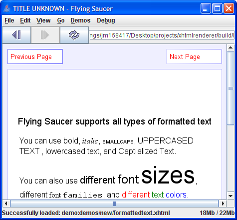
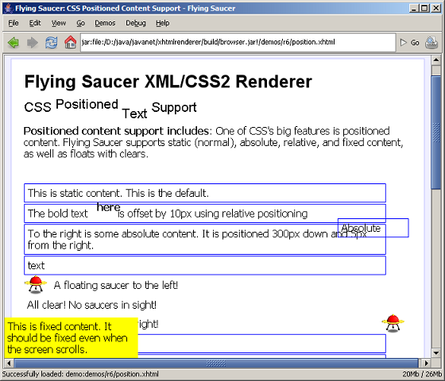
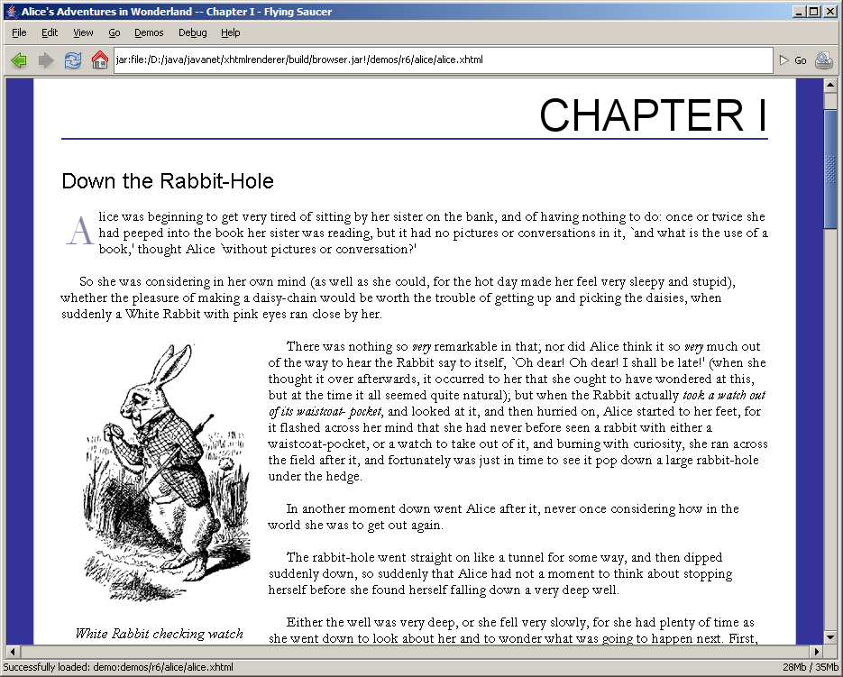
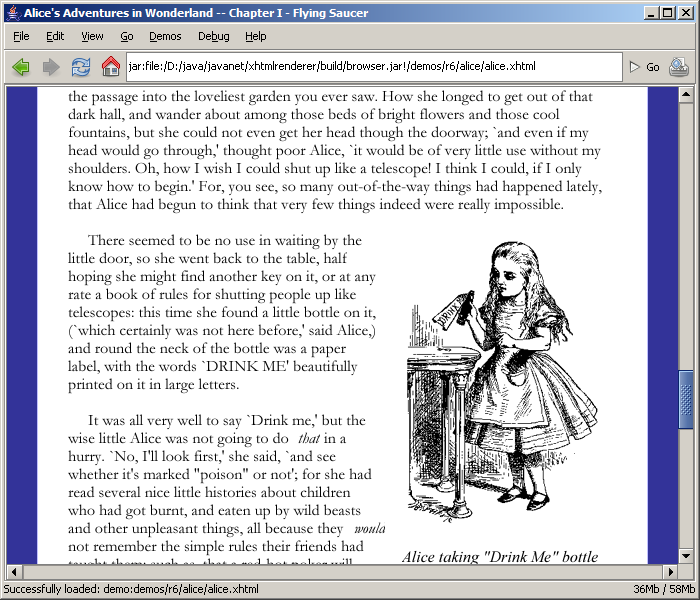

- About Flying Saucer
- Download
- Documentation - Upcoming R6 Release
- Documentation - R5 Release
- Contribute
- News Feed

Have You Seen the Saucer?
Here are screenshots of Flying Saucer in action.
A variety of styled text.

Some examples of CSS positioning. Notice the fixed position block in the bottom. That will stay there while you scroll.

The first chapter of Alice in Wonderland, showing off floats and text wrapping.

The same section of Alice, only this time we use the Minium anti-aliasing library instead of the default Swing anti-aliasing.
